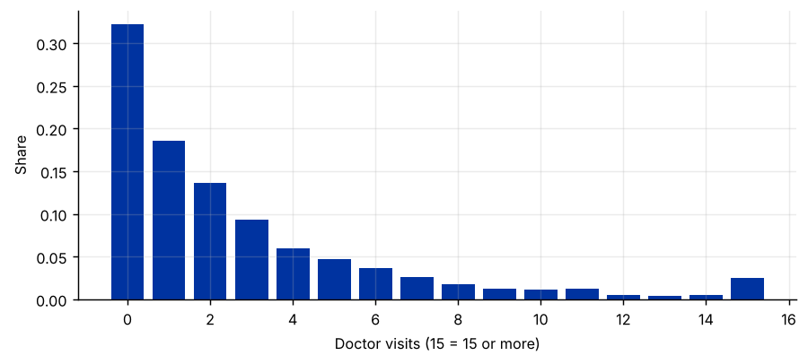
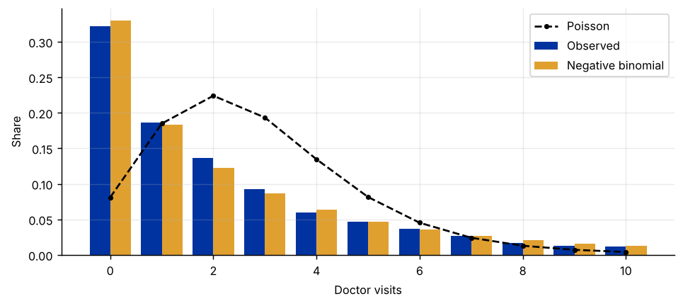

Run this model on your own data in Open Econometric Systems →
Step 1The question and the model
How do cost sharing and health status affect the number of doctor visits? The RAND experiment randomly assigned families to insurance plans with different coinsurance rates. In a Poisson model the expected count is
A coefficient is the change in the log expected count, so \(\exp(\beta)\) is a multiplicative effect, the incidence-rate ratio. The Poisson distribution forces the variance to equal the mean. The negative binomial (NB2) allows \(\operatorname{Var}(y) = \mu + \alpha\mu^2\), with a dispersion parameter \(\alpha \ge 0\).
| Variable in the file | Definition |
|---|---|
mdvis |
number of face-to-face doctor visits in the year |
lncoins |
log of coinsurance rate plus one (0 to 4.6) |
idp |
1 if the plan has an individual deductible |
lpi |
log of participation incentive payment |
fmde |
log of the maximum medical expenditure at the plan's deductible (0 if no deductible) |
physlm |
1 if the person has a physical limitation |
disea |
chronic-disease index (number of chronic conditions, scaled) |
hlthg, hlthf, hlthp |
self-rated health good, fair, poor (excellent is the base) |
Before you estimate anything
- Is the outcome a count? Non-negative whole numbers, with no fixed upper limit. For a count out of a known number of trials use a binomial model.
- Is the exposure the same for everyone? If people are observed for different lengths of time (or populations differ in size), use an exposure variable so the model describes a rate.
- Are there more zeros than the model can produce? If so, a zero-inflated or hurdle model may be needed (next guide).
How to write it: model section
The number of doctor visits is a non-negative count, so we model its conditional mean as \(\exp(x'\beta)\) and estimate it by Poisson maximum likelihood with standard errors that are robust to overdispersion. Because the variance far exceeds the mean, we also estimate a negative-binomial model with a dispersion parameter and compare the two. We report incidence-rate ratios and average marginal effects on the expected number of visits.
Step 2Load the data and look at the count
import warnings; warnings.filterwarnings("ignore")
import numpy as np, pandas as pd
import matplotlib.pyplot as plt
import statsmodels.api as sm
from scipy import stats
d = pd.read_csv("doctor_visits.csv")
y = d.mdvis
print(f"{len(d)} people; mean {y.mean():.2f}, variance {y.var():.2f}, maximum {y.max()}, share of zeros {(y == 0).mean():.1%}")
print(f"Variance / mean = {y.var() / y.mean():.1f} (1 for a Poisson variable)")
print("\nMean and variance of mdvis by quartile of the chronic-disease index")
print(d.groupby(pd.qcut(d.disea, 4, duplicates="drop")).mdvis.agg(["mean", "var", "size"]).round(2).T.to_string())
fig, ax = plt.subplots(figsize=(7, 3.2))
vc = y.clip(upper=15).value_counts().sort_index()
ax.bar(vc.index, vc.values / len(d), color="#0033a0"); ax.set_xlabel("Doctor visits (15 = 15 or more)"); ax.set_ylabel("Share")
plt.tight_layout()4000 people; mean 2.91, variance 22.63, maximum 77, share of zeros 32.2% Variance / mean = 7.8 (1 for a Poisson variable) Mean and variance of mdvis by quartile of the chronic-disease index disea (-0.001, 6.9] (6.9, 10.576] (10.576, 13.732] (13.732, 48.3] mean 2.10 2.28 3.37 4.54 var 14.63 12.33 24.78 43.75 size 1073.00 1312.00 815.00 800.00

How to read it
The variance is almost eight times the mean, so the Poisson assumption of equal mean and variance fails badly, and a third of the sample has no visits. The variance exceeds the mean in every group of the chronic-disease index, and the mean differs across groups, which is the relationship the regression will quantify.
Step 3Step 1: Poisson regression with robust standard errors
xs = ["lncoins", "idp", "lpi", "fmde", "physlm", "disea", "hlthg", "hlthf", "hlthp"]
X = sm.add_constant(d[xs])
pois_model = sm.GLM(y, X, family=sm.families.Poisson()).fit()
pois = sm.GLM(y, X, family=sm.families.Poisson()).fit(cov_type="HC0")
out = pd.DataFrame({"coef": pois.params, "robust s.e.": pois.bse, "model s.e.": pois_model.bse, "z (robust)": pois.tvalues}).round(4)
print(out.to_string())
print(f"\nRatio of robust to model-based standard errors: {(pois.bse / pois_model.bse).mean():.2f} on average")coef robust s.e. model s.e. z (robust) const 0.7111 0.0654 0.0251 10.8726 lncoins -0.0503 0.0152 0.0064 -3.3218 idp -0.2594 0.0583 0.0237 -4.4524 lpi 0.0190 0.0103 0.0040 1.8400 fmde -0.0283 0.0089 0.0036 -3.1876 physlm 0.1764 0.0757 0.0283 2.3310 disea 0.0381 0.0036 0.0013 10.6532 hlthg 0.0462 0.0546 0.0205 0.8468 hlthf 0.0260 0.0856 0.0347 0.3038 hlthp 0.5017 0.1386 0.0601 3.6194 Ratio of robust to model-based standard errors: 2.53 on average
How to read it
Each additional point of the chronic-disease index raises the log expected number of visits by 0.038, and having an individual deductible lowers it by 0.26. Poor self-rated health raises it by 0.50. The robust standard errors are about 2.5 times the model-based ones, which shows how much the Poisson formula understates uncertainty when the data are overdispersed. Poisson estimation of the mean remains consistent even then, which is why the robust version is the safe default.
Step 4Step 2: Rate ratios and marginal effects
irr = pd.DataFrame({"IRR": np.exp(pois.params), "low": np.exp(pois.params - 1.96 * pois.bse), "high": np.exp(pois.params + 1.96 * pois.bse)}).iloc[1:]
print(irr.round(3).to_string())
# Average marginal effects: for a continuous variable b_k * mean(mu); for a 0/1 variable the average change from 0 to 1
Xn = X.to_numpy(float); b = pois.params.to_numpy(); mu = np.exp(Xn @ b)
ame = {}
for i, c in enumerate(xs):
if set(d[c].unique()) <= {0, 1}:
A1, A0 = Xn.copy(), Xn.copy(); A1[:, i + 1], A0[:, i + 1] = 1, 0
ame[c] = (np.exp(A1 @ b) - np.exp(A0 @ b)).mean()
else:
ame[c] = (b[i + 1] * mu).mean()
print("\nAverage marginal effect on the expected number of visits")
print(pd.Series(ame).round(3).to_string())IRR low high lncoins 0.951 0.923 0.980 idp 0.772 0.688 0.865 lpi 1.019 0.999 1.040 fmde 0.972 0.955 0.989 physlm 1.193 1.028 1.384 disea 1.039 1.032 1.046 hlthg 1.047 0.941 1.166 hlthf 1.026 0.868 1.214 hlthp 1.652 1.259 2.167 Average marginal effect on the expected number of visits lncoins -0.146 idp -0.707 lpi 0.055 fmde -0.082 physlm 0.513 disea 0.111 hlthg 0.135 hlthf 0.076 hlthp 1.873
How to read it
A person with a deductible plan has 0.77 times the visits of one without (a 23% reduction, confidence interval 0.69 to 0.87), and a person in poor health has 1.65 times the visits of one in excellent health. In levels, a deductible lowers the expected count by 0.71 visits per year on average, and each point of the chronic-disease index adds 0.11. The rate ratio is the same for everybody; the marginal effect in levels is larger for people who already visit often, which is why it is averaged.
How to write it: main result
Individual deductibles reduce expected doctor visits by 23% (incidence-rate ratio 0.77, 95% confidence interval 0.69 to 0.87), or 0.71 visits per person per year at the sample average. Each point of the chronic-disease index raises visits by about 3.9%, and people in poor health have 65% more visits than those in excellent health.
Step 5Step 3: Is the variance equal to the mean?
mu_p = pois.mu
pearson = ((y - mu_p) ** 2 / mu_p).sum(); df_res = len(y) - X.shape[1]
print(f"Pearson chi-squared / df = {pearson / df_res:.2f}; deviance / df = {pois.deviance / df_res:.2f} (both about 1 if Poisson holds)")
# Cameron-Trivedi: regress ((y-mu)^2 - y)/mu on mu; the slope is alpha in Var = mu + alpha*mu^2
aux = sm.OLS(((y - mu_p) ** 2 - y) / mu_p, mu_p).fit()
print(f"Cameron-Trivedi: alpha = {aux.params.iloc[0]:.2f}, t = {aux.tvalues.iloc[0]:.2f}")
zeros = pd.Series({"observed": (y == 0).mean(), "Poisson predicts": stats.poisson.pmf(0, mu_p).mean()})
print("\nShare of zeros:", zeros.round(3).to_dict())Pearson chi-squared / df = 6.94; deviance / df = 4.43 (both about 1 if Poisson holds)
Cameron-Trivedi: alpha = 1.81, t = 7.95
Share of zeros: {'observed': 0.322, 'Poisson predicts': 0.081}How to read it
Both ratios are far above 1 (6.9 and 4.4), and the Cameron-Trivedi test strongly rejects equidispersion (t = 7.9). The Poisson model predicts 8% zeros against the 32% in the data. These are symptoms of overdispersion and unobserved heterogeneity among people with the same covariates, and they motivate the negative binomial.
Step 6Step 4: Negative-binomial regression
nb = sm.NegativeBinomial(y, X, loglike_method="nb2").fit(start_params=np.r_[pois.params, 0.5], method="bfgs", maxiter=2000, disp=0, cov_type="HC0")
alpha = nb.params.iloc[-1]
print(pd.DataFrame({"coef": nb.params, "robust s.e.": nb.bse, "z": nb.tvalues}).round(4).to_string())
print(f"\nalpha = {alpha:.3f} log-likelihood: NB {nb.llf:.1f} against Poisson {pois_model.llf:.1f}")
lr = 2 * (nb.llf - pois_model.llf)
print(f"LR test of alpha = 0: chi2 = {lr:.0f}, p = {0.5 * stats.chi2.sf(lr, 1):.2g} (halved, boundary test)")
print(f"AIC: Poisson {pois_model.aic:.0f}, negative binomial {nb.aic:.0f}")
mu_nb = np.exp(Xn @ nb.params.iloc[:-1].to_numpy())
r = 1 / alpha
print(f"\nShare of zeros: observed {(y == 0).mean():.3f}, NB predicts {stats.nbinom.pmf(0, r, r / (r + mu_nb)).mean():.3f}")coef robust s.e. z const 0.6591 0.0679 9.7090 lncoins -0.0603 0.0157 -3.8437 idp -0.2722 0.0597 -4.5604 lpi 0.0318 0.0105 3.0109 fmde -0.0332 0.0089 -3.7230 physlm 0.1573 0.0740 2.1277 disea 0.0424 0.0040 10.5454 hlthg 0.0167 0.0555 0.3009 hlthf -0.0522 0.0883 -0.5912 hlthp 0.4470 0.1481 3.0184 alpha 1.3945 0.0552 25.2397 alpha = 1.394 log-likelihood: NB -8621.8 against Poisson -12841.8 LR test of alpha = 0: chi2 = 8440, p = 0 (halved, boundary test) AIC: Poisson 25704, negative binomial 17266 Share of zeros: observed 0.322, NB predicts 0.330
How to read it
The dispersion parameter alpha is 1.39, far from zero, and the likelihood-ratio test rejects the Poisson model decisively; the AIC falls by about 8,400. The negative binomial predicts 33% zeros against the observed 32%. The coefficients are close to the Poisson ones (a deductible lowers visits by 24% against 23%, a point of the disease index raises them by 4.3% against 3.9%), but the negative binomial weights observations differently, and the two agree to this extent only if the mean is well specified. A large difference between the two would be a warning about the mean function.
Step 7Step 5: How well does each model reproduce the distribution?
ks = np.arange(0, 11)
obs = np.array([(y == k).mean() for k in ks])
p_pois = np.array([stats.poisson.pmf(k, mu_p).mean() for k in ks])
p_nb = np.array([stats.nbinom.pmf(k, r, r / (r + mu_nb)).mean() for k in ks])
fig, ax = plt.subplots(figsize=(7.5, 3.4))
ax.bar(ks - 0.2, obs, 0.4, label="Observed", color="#0033a0"); ax.bar(ks + 0.2, p_nb, 0.4, label="Negative binomial", color="#e0a030")
ax.plot(ks, p_pois, "k.--", label="Poisson"); ax.set_xlabel("Doctor visits"); ax.set_ylabel("Share"); ax.legend()
plt.tight_layout()
print("Largest gap between observed and predicted share, counts 0 to 10:")
print(f" Poisson: {abs(obs - p_pois).max():.3f} negative binomial: {abs(obs - p_nb).max():.3f}")Largest gap between observed and predicted share, counts 0 to 10: Poisson: 0.241 negative binomial: 0.014

How to read it
The Poisson curve badly underpredicts zeros and long counts and overpredicts the middle; the negative binomial follows the observed distribution closely: the largest gap between observed and predicted shares over the counts 0 to 10 is 0.24 for the Poisson and 0.014 for the negative binomial. When the zeros are still too frequent after the negative binomial, consider a zero-inflated or hurdle model.
Step 8What to report in the paper
Report the mean and variance of the count; the model and why you chose it (the dispersion tests); coefficients with robust standard errors, incidence-rate ratios and average marginal effects; the comparison of Poisson and negative binomial; and any exposure variable.
How to write it: results and robustness
Table 2 reports Poisson and negative-binomial estimates. The variance of visits is 7.8 times its mean, a Cameron-Trivedi test rejects equidispersion, and a likelihood-ratio test rejects the Poisson model in favor of the negative binomial (alpha = 1.39). The two models give the same signs and similar magnitudes for the variables of interest, and the negative-binomial model reproduces the share of people with no visits (33% predicted, 32% observed) where the Poisson model predicts 8%.
Step 9Common mistakes
Mistakes to avoid
- Using the model-based Poisson standard errors. They are far too small under overdispersion. Use robust ones.
- Reading a coefficient as a change in the count. It is a change in the log count; use the rate ratio or the marginal effect.
- Transforming the count and using OLS. The log of a count with zeros is undefined and log(y + 1) gives biased effects.
- Ignoring different exposure. If observation periods or populations differ, add an exposure variable.
- Choosing between Poisson and negative binomial only by a significance test. Compare the fit of the whole distribution, not only alpha.
- Treating excess zeros as overdispersion. If a separate process generates the zeros, a zero-inflated or hurdle model describes the data better.
- Comparing NB2 and Poisson coefficients as if they estimated different things. Both estimate the mean function; if they differ much, check the specification.